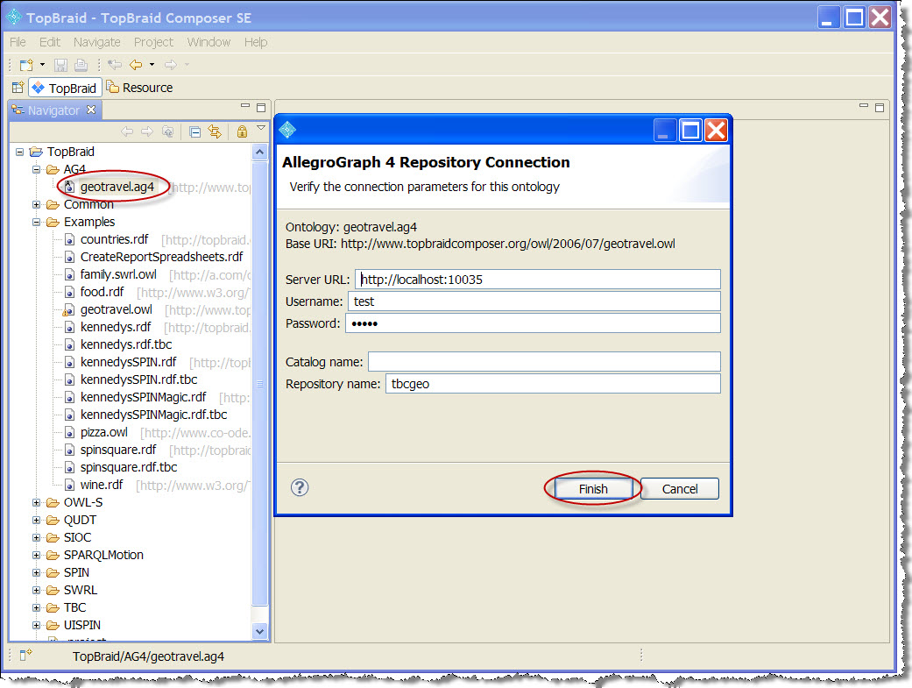

Introduction
Top-Braid Composer (TBC), a product of TopQuadrant, Inc., is a graphical development environment for modeling data, connecting data sources, and designing queries, rules and semantic data processing chains.
Starting with TBC release 5.2, AllegroGraph works with TBC using the Sesame 2 connector, which is built into TBC. (There was an AllegroGraph plugin which could be used with versions of TBC up to 5.1.4. However, the plugin does not work with TBC 5.2 and later. The first part of this document describes connecting AllegroGraph and TBC with the Sesame 2 connector. The older plugin method is still described, below in the second part of this document.)
Installing TopBraid Composer
Download TopBraid Composer from the TopQuadrant web site:
http://www.topquadrant.com/downloads/topbraid-composer-install/ The TopBraid Composer installation instructions are on that page.
You may use either the Standard Edition or the Maestro Edition.
Using the Sesame 2 connector
Start TBC by running TopBraid Composer.exe. You should find it in the top-level directory of the files you unzipped. A window like this will open:
Connect TBC to AllegroGraph
Start AllegroGraph, either on the machine running TBC or on a machine accessible over the network by the machine running TBC. In the example below, we start AllegroGraph on machine crow, listening on port 10035. We have created a new, empty repository named kenn.
In the navigator pane in the lower left, open the TopBraid folder, right click in the background to display the menu and choose New | Folder. You will be asked for the parent folder (TopBraid) and the name (AG4). When done, the window will look like:
In the same Navigator pane, open the Examples subfolder of TopBraid and select kennedy.ttl, a file of data about the Kennedy family in Turtle format.
Double click on that file and various other fields of the TBC window will populate:
The next step is to export kennedy.ttl into AllegroGraph database. In the Navigator Pane, right-click the TopBraid/AG4 node, and select Export from the context menu. In the Export dialog box, open the TopBraid Composer node and select Export/Merge/Convert RDF Graphs. Click Next.
The Export/Merge/Convert RDF Graphs dialog will appear. In the Export into format field, choose *Sesame2 Remote Repository (s2r)* from the drop-down list. Choose a file name ('kennedy' in the illustration). Make sure the checkbox next to the http://topbraid.org/examples/kennedys* is checked, then Click Next.
That action brings up a dialog allowing you to specify the connection to the running AllegroGraph server, similar to the following:
The Service URL specifies the machine and port of the AllegroGraph server. In this example (which was created with TBC running on Windows) the machine is crow and the port is 10035 (the port value used in a default AllegroGraph install). If you were running TBC on the same (Linux) machine as the AllegroGraph server, you could specify http://localhost:10035.
The Graph name specifies the graph to use for triples. Leaving it blank (as we have done) specifies the root graph.
The User Name and Password are for the AllegroGraph login. The user and the password must have been already set up in AllegroGraph. The test user is the default initial superuser in an AllegroGraph installation. The password (unreadable in the image but 'xyzzy') is the default password for user test in an AllegroGraph installation. Because user test is a superuser, there is no issue about permissions. If you specify a non-superuser, be sure that user has appropriate permissions for whatever you wish to do.
Once those fields have been entered correctly, clicking on Fetch Repositories will display the available repos. We have chosen one we created named kenn.
Then click Finish. If all goes well, a confirming dialog will appear:
SPARQL and Prolog Queries
Open TopBraid's SPARQL editor pane (look for the SPARQL tab at the bottom right of the TBC window -- where the orange arrows are in the illustration which shows the SPARQL tab already selected). It contains a default SPARQL query that searches for rdfs:subClassOf triples. The SPARQL window has three buttons that let you run a query with or without locally-configured inferencing. Click the green "Run" button to run this query (we have done this already to produce the illustration). After a few seconds you will see a table of ?subject and ?object values returned from the triple store.
Connecting TBC to the Virtual Server on Windows or Mac
AllegroGraph runs on 64-bit (x86-64) Linux. Windows and Mac users can simulate a 64-bit Linux environment using the AllegroGraph Virtual Machine, which can be downloaded from the AllegroGraph Download page. The virtual machine has AllegroGraph pre-installed on port 10035. TopBraid Composer can be connected to the virtual machine for experiments where performance is not critical.
Both the virtual server and TopBraid can be installed on the same computer, if desired, or TopBraid can connect to the virtual machine from another computer across a network.
TBC and VM on the Same Computer
To connect TopBraid Composer to a virtual AllegroGraph server, with both running on the same physical computer, all you need is the IP address of the virtual machine. This IP address is usually assigned when the virtual machine comes on line, and may change from session to session. To discover the current IP address in the AllegroGraph 6.1.3 or newer VM, open a terminal window and run the script ~/franz/ipaddr.sh. That will report the current IP address of the VM.
If you are running an older AllegroGraph VM, open a terminal window in the virtual machine and type the ifconfig command. (Note: ifconfig, not ipconfig.) The server's IP address is in the second line of the response.
Use this IP address and the AllegroGraph port number (10035) when you connect TopBraid Composer to the virtual AllegroGraph server.
Connect TBC to the VM on a Local Network
The AllegroGraph Virtual Machine's network adaptor is set to Network Address Translation (NAT) by default. This setting makes it easy to connect TBC to the VM when both are on the same host computer. If you have TBC and the VM running on separate computers, you might encounter difficulty making the connection.
To connect to a virtual AllegroGraph server on a network computer, you will have to reconfigure the virtual machine's network adaptor. Open the VM menu > Settings... > Network Adaptor dialog box. The objective is to turn off NAT and enable "bridging" instead.
Enabling bridged networking on VMware Workstation
Select "Bridged: Connect directly to the physical network." Check the option that says "Replicate the physical network connectivity state."
Enabling bridged networking on VMware Fusion
Select "Connect directly to the physical network (Bridged)." Select "Autodetect."
After enabling bridged networking
Close the dialog box and reboot the virtual machine. Run the script ~/franz/ipaddr.sh in a terminal (or run ifconfig if you have an older VM -- see above for details) to get the new IP address. This address (using port 10035) will connect across the network.
If there are further issues, see the VMware documentation.
The AllegroGraph Plugin (for TBC 5.1.4 and earlier)
Until TBC release 5.2, the AllegroGraph TopBraid Composer Plugin let the TBC user connect to an AllegroGraph server, load data into an AllegroGraph triple store, and execute SPARQL queries against the triple store. If the user has the proper AllegroGraph privileges, it is also possible to issue Prolog queries and to use the RDFS++ inference.
The plugin is not supported for TBC 5.2 and later. This part of this document is for users who have versions of TBC up to 5.1.4.
Installing TopBraid Composer (for TBC 5.1.4 and earlier)
Download TopBraid Composer from the TopQuadrant web site:
http://www.topquadrant.com/downloads/topbraid-composer-install/ The TopBraid Composer installation instructions are on that page.
You may use either the Standard Edition or the Maestro Edition.
Installing the AllegroGraph Plugin (for TBC 5.1.4 and earlier)
Run TopBraid Composer.exe. You should find it in the top-level directory of the files you unzipped.
In the TopBraid interface, open the Help menu and select Install new software... This opens the Available Software dialog.
Click the Add... button in the upper right corner. This opens the Add Site dialog box.
Type "AllegroGraph Plugin" into the Name field, and paste the AllegroGraph Plugin URL into the Location field.
For TBC 5.1.4 release (tested on 5.1.4)
http://www.franz.com/ftp/pub/agraph/eclipse/tbc/5.1.4 TBC releases after 5.0.x and before 5.1.4 have not been tested.
For TBC 5.0.1 release and 5.0.x releases for x equal 1 or larger (tested on 5.0.1)
http://www.franz.com/ftp/pub/agraph/eclipse/tbc/5.0.1 For TBC 5.0 release (unsupported because of software issues, see TBC 5.0.1)
For TBC 4.6.x releases (tested on 4.6), the appropriate URL is:
http://www.franz.com/ftp/pub/agraph/eclipse/tbc/4.6 For TBC 4.5.x releases (tested on 4.5), the appropriate URL is:
http://www.franz.com/ftp/pub/agraph/eclipse/tbc/4.5
For TBC 4.4.x releases (tested on 4.4 and 4.4.1), the appropriate URL is:
http://www.franz.com/ftp/pub/agraph/eclipse/tbc/4.4 For TBC 4.3.x releases (tested on 4.3.0), the appropriate URL is:
http://franz.com/ftp/pub/agraph/eclipse/tbc/4.3 For TBC 4.2.x releases (tested on 4.2.0 and 4.2.1), the appropriate URL is:
http://franz.com/ftp/pub/agraph/eclipse/tbc/4.2 For TBC 4.1.x releases (tested on 4.1.0), the appropriate URL is:
http://franz.com/ftp/pub/agraph/eclipse/tbc/4.1 For TBC 4.0.x releases (tested on 4.0.0), the appropriate URL is:
http://franz.com/ftp/pub/agraph/eclipse/tbc/4.0 For TBC 3.6.0 and 3.6.1 releases, the appropriate URL is:
http://franz.com/ftp/pub/agraph/eclipse/tbc/3.6 Note: the TBC 3.6.2 release was discontinued by Top Quadrant, and the AG plugins are not available for that release (please use the TBC 4 or 3.6.1 release instead).
For TBC 3.5.x releases, the appropriate URL is:
http://franz.com/ftp/pub/agraph/eclipse/tbc/3.5 and for TBC 3.4.x or TBC 3.3.x releases, the URL is:
http://franz.com/ftp/pub/agraph/eclipse/tbc/plugins Versions prior to TBC 3.3 are not supported.
Click the OK button to close the Add Site dialog. This returns focus to the Available Software dialog.
On the Available Software dialog, uncheck the Group items by category checkbox. Then check the box next to com.franz.agraph.feature. Click the Next button.
Confirm that you want to install the AllegroGraph plugin. Accept the license agreement. Ignore the warning about unsigned plugins. The Available Software dialog will close.
Close and restart TopBraid Composer to activate the AllegroGraph plugin.
Testing the Installation (for TBC 5.1.4 and earlier)
To test the AllegroGraph plugin installation, you will need access to an AllegroGraph server (version 4.0.6 or later). You will need the URL and port number of the server, plus the name and password of an AllegroGraph user who is authorized to create and manipulate a triple store.
The test consists of taking a .owl ontology in the TopBraid environment, converting it into AllegroGraph format, pushing it to a triple store on the AllegroGraph server, and then running a SPARQL query that returns results from AllegroGraph back to TopBraid Composer.
Connect TBC to AllegroGraph (for TBC 5.1.4 and earlier)
Create a new folder in the Navigator Pane to contain your AllegroGraph ontologies. Right-click the TopBraid node and follow the context menu to New > Folder. Name the folder AG4.
In the Navigator Pane, open the TopBraid/Examples node and double-click on geotravel.owl. This will open the ontology in various panes of the TopBraid interface.
The next step is to export geotravel.owl as an AllegroGraph database. In the Navigator Pane, right-click the TopBraid/AG4 node, and select Export from the context menu. In the Export dialog box, open the TopBraid Composer node and select Export/Merge/Convert RDF Graphs. Click Next.
On the next panel, select the AllegroGraph 4 Database Storage (*.ag4) format, and give the target file a name, such as geotravel. No suffix is needed on the file name. We only want to export one graph: geotravel.owl. Click Next.
On the next panel, enter your AllegroGraph URL, port number, and credentials. Enter the name of an existing AllegroGraph catalog, or leave that field blank to use the default RootCatalog. Then enter the name of the repository you want to use within that catalog, such as tbcgeo. If you use a new repository name, AllegroGraph will create a repository for you.
(Note that Catalogs cannot be created from TopBraid Composer. New catalogs are created by editing the AllegroGraph server's configuration file.)
Click Finish. TopBraid Composer will upload the data to the AllegroGraph server. This might take a while, depending on the size of your ontology file. For the geotravel example, it takes a few seconds.
When the data finishes loading, you should see a geotravel.ag4 file in your TopBraid/AG4 folder.
Close the geotravel.owl overview panel. (If you omit this step, TopBraid will complain about having two copies of the same model open at the same time when you export to AllegroGraph.)
In the Navigator Pane, double-click the geotravel.ag4 file. You'll see an AG4 Repository Connection dialog box that displays your AllegroGraph connection information and credentials. There is no need to change these settings. Click Finish.

SPARQL and Prolog Queries (for TBC 5.1.4 and earlier)
Open TopBraid's SPARQL editor pane (look for the SPARQL tab). It contains a default SPARQL query that searches for rdfs:subClassOf triples. The SPARQL window has three buttons that let you run a query with or without locally-configured inferencing. Click the green "Run" button to run this query. After a few seconds you will see a table of ?subject and ?object values returned from the triple store.
The TopBraid SPARQL editor lets you use TopBraid's local inference features. To use AllegroGraph's server-side inference (and to pose Prolog queries in addition to SPARQL queries), you'll need to open the Agraph View. Select Window menu > Show view > Other... to open the Show View dialog box. In the TopBraid folder select the Agraph view. Click the OK button.

This opens a new query-editing pane in the TopBraid window. This Agraph view accepts both SPARQL and Prolog queries. It has three buttons that perform the following functions:
- Execute the query.
- Toggle on/off AllegroGraph's reasoning.
- Toggle SPARQL/Prolog query language.
To try a Prolog query, copy this text into the edit pane:
(select (?s ?o)
(q ?s !rdfs:subClassOf ?o)) Click the button that selects the Prolog query language. Then click the Run button.
Query results from the Prolog query prove that the AllegroGraph plugin is installed and working correctly.
Connecting TBC to the Virtual Server on Windows or Mac (for TBC 5.1.4 and earlier)
AllegroGraph runs on 64-bit (x86-64) Linux. Windows and Mac users can simulate a 64-bit Linux environment using the AllegroGraph Virtual Machine, which can be downloaded from the AllegroGraph Download page. The virtual machine has AllegroGraph pre-installed on port 10035. TopBraid Composer can be connected to the virtual machine for experiments where performance is not critical.
Both the virtual server and TopBraid can be installed on the same laptop, if desired, or TopBraid can connect to the virtual machine from another computer across a network.
TBC and VM on the Same Computer (for TBC 5.1.4 and earlier)
To connect TopBraid Composer to a virtual AllegroGraph server, with both running on the same physical computer, all you need is the IP address of the virtual machine. This IP address is usually assigned when the virtual machine comes on line, and may change from session to session. To discover the current IP address, open a terminal window in the virtual machine and type the ifconfig command. (Note: ifconfig, not ipconfig.) The server's IP address is in the second line of the response.
Use this IP address and the AllegroGraph port number (10035) when you connect TopBraid Composer to the virtual AllegroGraph server.
Connect TBC to the VM on a Local Network (for TBC 5.1.4 and earlier)
The AllegroGraph Virtual Machine's network adaptor is set of Network Address Translation (NAT) by default. This setting makes it easy to connect TBC to the VM when both are on the same host computer. If you have TBC and the VM running on separate computers, you might encounter difficulty making the connection.
To connect to a virtual AllegroGraph server on a network computer, you will have to reconfigure the virtual machine's network adaptor. Open the VM menu > Settings... > Network Adaptor dialog box. The object is to turn off NAT and enable "bridging" instead.
Windows (for TBC 5.1.4 and earlier)
Select "Bridged: Connect directly to the physical network." Check the option that says "Replicate the physical network connectivity state."
Mac (for TBC 5.1.4 and earlier)
Select "Connect directly to the physical network (Bridged)." Select "Autodetect."
Close the dialog box and reboot the virtual machine. Use "ifconfig" to get the new IP address. This address (using port 10035) will connect across the network.
If there are further issues, see the VMware documentation.
Checking for Updates (for TBC 5.1.4 and earlier)
The AllegroGraph TopBraid Composer plugin will be updated as needed. To check for an update, open the Help menu and select Check for Updates.
Removing the AllegroGraph Plugin (for TBC 5.1.4 and earlier)
To remove the AllegroGraph plugin from TopBraid Composer, open the Help menu and select Install New Software.... On the resulting dialog box, click the link labeled "What is already installed?"
This opens a list of installed plugins. Click on com.franz.agraph.feature and then on the Uninstall... button.
Known Issues
This section lists all known issues in the latest version of the AllegroGraph Plugin.
- When you export data to AllegroGraph using the AllegroGraph Plugin in TBC, a triple describing the ontology's base URI (
<baseUri> rdf:type owl:Ontology) is added, even if it already exists in the data. If the database doesn't have duplicate removal enabled, this causes a duplicate entry to appear.